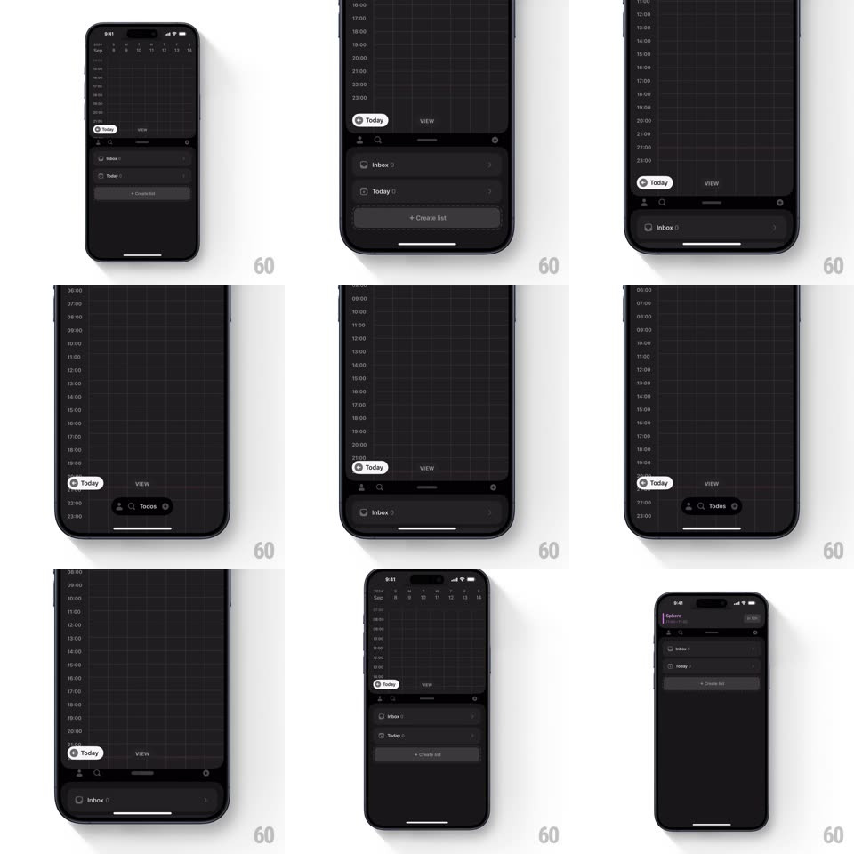

Media
Frame-by-frame

Rebuild this interaction 1:1: Amie's collapsible todo panel - dragging the lists sheet downward morphs it into a compact floating "Todos" dock (person + magnifier + label) resting above the home indicator, and pulling it back up springs it into the full sheet.

Rebuild this interaction 1:1: Amie's collapsible todo panel - dragging the lists sheet downward morphs it into a compact floating "Todos" dock (person + magnifier + label) resting above the home indicator, and pulling it back up springs it into the full sheet.
## Integration
Integration: stack-agnostic spec - springs given as stiffness/damping, timed motions as duration + curve; map every value to your framework and animation library of choice.
## Scene
Dark calendar with a bottom sheet holding Inbox / Today / + Create list rows. Collapsed: a small dark rounded dock ("Todos" with icons) floating at the bottom edge, the calendar reclaiming the full height.
## Motion spec
Pattern: sheet-to-dock morph on drag.
- Drag down: the sheet tracks 1:1; past 40% height its content (list rows) fades out proportionally and the sheet's shape begins narrowing toward the dock's pill geometry (width and corner radius interpolating with drag progress).
- Release below the midpoint: the sheet accelerates down and morphs fully into the dock (spring ~320/20, one soft bounce as the pill lands); the calendar's bottom padding animates closed with it.
- Drag the dock up: it stretches taller under the finger (pill rounding easing out), the list rows fading back in once past 60% - then springs to full sheet (spring ~340/22).
- The calendar grid behind adjusts its visible range live during every drag - content reflows continuously, never jumps.
## Calibration
- Two stable states only: full sheet or dock - release anywhere else snaps to the nearer one.
- The dock keeps a "Today" pill visible at its left - context survives collapse.
## Reduced motion
Sheet and dock crossfade between states.
## Don't miss
- It's a MORPH, not sheet-out/dock-in: the same surface continuously reshapes.
- The dock is small enough that the calendar reads as full-screen - the point of collapsing is space.